Oath of the Hollow
Proposed · Moss Sword
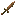
16px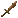
18px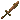
20px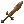
24px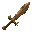
32px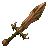
48pxUnique / crafted: native 32 and 48
broad copper sword, leaf-shaped blade and moss wrapped antler guard
Vesper's Reach
Proposed · Bat Bow
16px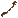
18px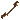
20px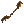
24px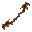
32px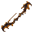
48px Unique / crafted: native 32 and 48
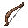
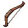
pine recurve bow, swept bat wing tips and amber string fittings
The Wandering Light
Proposed · Wisp Staff
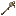
16px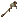
18px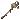
20px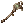
24px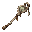
32px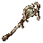
48pxUnique / crafted: native 32 and 48
birch staff curled around a sealed pale green spirit bead
Requiem Bell
Proposed · Bone Censer
16px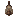
18px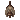
20px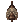
24px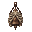
32px48px Unique / crafted: native 32 and 48
copper hanging censer inside an ivory rib cage with a heavy bell silhouette
Gate of the Deep
Proposed · Quarry Shield
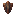
16px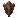
18px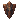
20px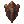
24px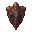
32px48pxUnique / crafted: native 32 and 48
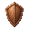
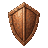
massive angular copper shield, dark stone central boss with a glowing fault line
Night's Reserve
Proposed · Bat Quiver
16px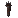
18px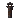
20px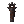
24px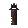
32px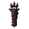
48px Unique / crafted: native 32 and 48
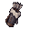
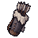
iron trimmed leather quiver with scalloped bat wing mouth and three broad arrow heads
Mercy of the Fen
Proposed · Wisp Lantern
16px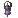
18px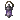
20px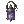
24px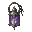
32px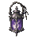
48px Unique / crafted: native 32 and 48
silver lantern, amethyst glass, bent marsh reed handle and trapped pale spirit flame
The Unfinished Prayer
Proposed · Bone Tome
16px18px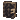
20px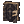
24px32px48px Unique / crafted: native 32 and 48
iron bound dark tome with broad ivory jaw clasp and parchment page edges
Crown of the Burrow
Proposed · Beetle Helm
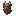
16px18px20px24px32px48pxUnique / crafted: native 32 and 48
copper closed helmet with oversized beetle shell crest and short mandible cheek guards
Veil of the Unheard
Proposed · Echo Cowl
16px18px20px24px32px48px
Unique / crafted: native 32 and 48
dark hide hood with swept bat ear crown and copper crescent brow
The Scarlet Vigil
Proposed · Spore Circlet
16px18px20px24px32px48px
Unique / crafted: native 32 and 48
pale quartz circlet with scarlet mushroom cabochon and branching crystal prongs
Last Rites
Proposed · Bone Mitre
16px18px20px24px32px48px
Unique / crafted: native 32 and 48
tall silver trimmed ceremonial mitre, ivory rib seam and dark amethyst inset
Mountain's Covenant
Proposed · Quarry Plate
16px18px20px24px32px48px
Unique / crafted: native 32 and 48
silver plate torso with broad layered shoulders and one cracked stone shoulder inset
The Drowned Huntsman
Proposed · Marsh Leathers
16px18px20px24px32px48px
Unique / crafted: native 32 and 48
dark leather torso armour, iron clasps and asymmetric pale reed collar
Mantle of the Red Moon
Proposed · Spore Robe
16px18px20px24px32px48px
Unique / crafted: native 32 and 48
dark woven robe with iron trim, broad scarlet mushroom cap shoulder and pale hem
Vestments of the Last Dawn
Proposed · Bone Vestments
16px18px20px24px32px48px
Unique / crafted: native 32 and 48
blue cobalt trimmed ceremonial vestments with ivory rib clasp and pale pearl centre
The Final Answer
Proposed · Rattlebone Charm
16px18px20px24px32px48px
Unique / crafted: native 32 and 48
ivory jaw pendant cradling a dim amber soul bead, copper chain
Burrower's Promise
Proposed · Carapace Pick
16px18px20px24px32px48px
Unique / crafted: native 32 and 48
copper pickaxe with a beetle shell socket and hooked mandible pick ends
Reed of Remembrance
Proposed · Wisp Axe
16px18px20px24px32px48px
Unique / crafted: native 32 and 48
iron wood axe, birch handle, broad crescent blade with reed shaped eye and pale spirit inset
Harvest of Whispers
Proposed · Spore Sickle
16px18px20px24px32px48px
Unique / crafted: native 32 and 48
copper crescent sickle, pine handle, scarlet mushroom cap pommel
Thorn of the First Grove
Proposed · Moss Spear
16px18px20px24px32px48px
Unique / crafted: native 32 and 48
iron spear with broad leaf head, birch shaft and moss frond collar
The Green Promise
Legacy · Sproutblade
16px18px20px24px32px48px
Unique / crafted: native 32 and 48
copper short sword with living green shoot curled around the blade base
Vesper's Shroud
Legacy · Echo Cowl
16px18px20px24px32px48px
Unique / crafted: native 32 and 48
copper helmet with shadowed face and broad bat wing cheek flares
Saint's Last Tooth
Legacy · Rattlebone Charm
16px18px20px24px32px48px
Unique / crafted: native 32 and 48
single large ivory fang relic in a copper cage, amber bead at crown
Mandible of the Barrow
Legacy · Carapace Pick
16px18px20px24px32px48px
Unique / crafted: native 32 and 48
copper pickaxe with asymmetrical beetle mandible head and dark shell binding
Heart of the Sleeping Grove
Legacy · Sporeheart
16px18px20px24px32px48px
Unique / crafted: native 32 and 48
scarlet heart shaped mushroom relic nested in copper roots and pale gills
The Quarry's Verdict
Legacy · Golemfist
16px18px20px24px32px48px
Unique / crafted: native 32 and 48
heavy copper stone edged cleaver sword with blocky golem fist guard
The Mourning Bough
Legacy · Wisp Axe
16px18px20px24px32px48px
Unique / crafted: native 32 and 48
iron axe on twisted birch branch, broad pale spirit shaped blade inset
Crown of the Cinder Wyrm
Legacy · Wyrmscale Helm
16px18px20px24px32px48px
Unique / crafted: native 32 and 48
copper helm with dark dragon scale crown, swept horns and ember inset
The Vacant Throne
Legacy · Crown of Hollows
16px18px20px24px32px48px
Unique / crafted: native 32 and 48
iron royal helmet crowned by tall broken prongs, hollow black centre and amber eye slit
Worldroot Breaker
Legacy · Colossus Pick
16px18px20px24px32px48px
Unique / crafted: native 32 and 48
huge silver pickaxe with gnarled oak handle and mossy stone root socket
Prism of the Seven Hungers
Legacy · Hydra Glass
16px18px20px24px32px48px
Unique / crafted: native 32 and 48
cobalt framed pale glass prism with three serpentine neck silhouettes and pearl core
Light's Last Refuge
Legacy · Lantern Eater's Fang
16px18px20px24px32px48px
Unique / crafted: native 32 and 48
mithril fang sword with lantern shaped guard, dark beast tooth edge and pale blue trapped light
The King's Silence
Legacy · Pale Tyrant's Axe
16px18px20px24px32px48px
Unique / crafted: native 32 and 48
mithril double crescent axe, tideash handle and ivory crowned skull socket